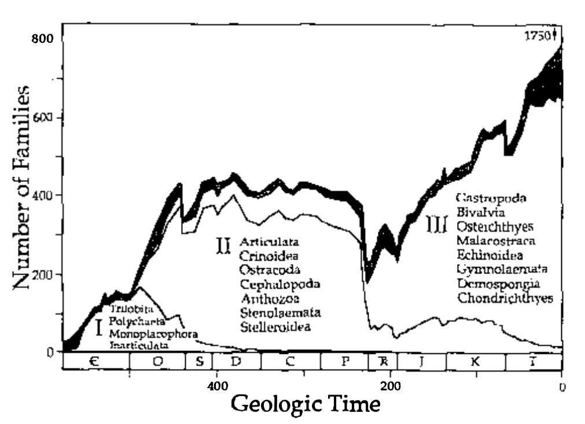

1. Recap: definitions.
2. History and the Evolutionary Synthesis
(Futuyma Chapter 1)
3. Earth History and Diversity Through Time
(Futuyma Chapter 17)
Evolution: descent with modification, i.e., inherited change in the properties of groups of organisms over the course of generations. (Individuals do not evolve, populations do).
Natural Selection: The differential success (reproduction) of individuals in a population based on variation. (Provides a mechanistic explanation for apparent design in nature that does not invoke the supernatural.)
Adaptation: a characteristic that varies (or varied) within a population that enhances (or enhanced) the reproductive success of individuals that bear it. Adaptations have evolved by natural selection.
1831-1836: Charles Darwin serves as naturalist aboard the H.M.S Beagle charting the coast of South America. He collects fossils, specimens, and studies the diversity of local flora and fauna.
1859: Darwin publishes The Origin of Species in which he describes descent with modification and the role of natural selection acting on hereditary variation. He provides abundant examples taxonomy, biogeography, anatomy, paleontology, physiology, behavior, ecology, and artificial selection (animal breeding). He understood the revolutionary impact of his idea. Alfred Russel Wallace independently discovered natural selection shortly after Darwin.
1833, Charles Lyell: wrote Principles of Geology describing geological evidence (including fossils) that the Earth is very old. He proposed uniformitarianism: that processes of small effect we observe in the present (e.g., erosion) create large-scale patterns over time.
1798, Thomas Malthus: wrote The Principle of Population arguing that populations can overgrow their capacity leading to massive starvation. Darwin was influenced to think that a non-random subset of individuals survive and reproduce.
1809, Jean Baptiste de Lamarck: wrote Philosophie Zoologique in which he proposed that some organisms have evolved from common ancestors. He was quite wrong about the processes involved, and is famous for championing inheritance of acquired characters.
1798, Erasmus Darwin: was Charles Darwin's grandfather and a famous poet. In his poem The Botanic Garden he describes
"all warm-blooded animals have arisen from one living filament."
Wiki Link: A longer discussion on the history of evolutionary thought.
Unlike Lamarck's transformational theory, in which individual organisms change over time, Darwin's theory centers on variational change: change in the frequency of variant forms in a population over generations.
Where does variation come from? Although it was widely recognized that offspring appear similar to their parents (heredity), the prevailing understanding of the time was of Blending Inheritance, that variation should decrease towards the mean, not increase over time...
1866, Gregor Mendel wrote on his theory of Particulate Inheritance, proposing that inheritance is based on particles (i.e., genes) not blending fluids. This work was not widely known until much later.
(Link: a great book on Mendel).
By the 1930's a consensus had developed that adaptive evolution is caused by natural selection acting on particulate (Mendelian) variation.
The foundations of modern evolutionary biology -- the major causes of evolution within and among species -- were established:
mutation, gene flow, genetic drift, selection, (and recombination).
(Link: further reading on the major scientists and writers involved.)
To study and understand evolution it is important to calibrate your brain with relative dates and patterns of the fossil record. How old is the Earth? When did arthopods evolve? When did animals move from the sea to land? How did animals, plants, fungi and other organisms interact through time, or how did the origination or diversification of clades impact others?
We have all been to natural history museums, and watched documentaries or films images of pre-historic communities. But how do we know what we know, how accurate is it, and what are we most uncertain about?
The age of the Earth (4.6 billion); first evidence of unicellular life (3.5 billion); evidence for a universal common ancestor; first evidence of Eukaryotes (1.8 billion);
the significance of the Cambrian explosion; the Permian and K/T mass extinctions.
The fossil record is non-randomly biased and massively incomplete, yet still it is a rich and incredible resource from which we derive most of our knowledge about the history of life.
Photosynthetic increase in atmospheric oxygen during the Cambrian allowed formation of hard bodies/shells.
The colonization of land by plants and fungi eroded rocks to form soil, which allowed further colonization by plants and animals.
This continues to the more recent: the evolution angiosperms with much higher transpiration rates created rainforest ecosystems by cycling water to affect climate.
Climate change causes mass extinctions that have impacted some clades more than others. Tectonic drift affects ocean currents, climate, coastal area, and the size of biomes.
This continues to the more recent: tectonic drift led to connection of the Americas and the interaction and exchange of flora and fauna. Similarly, limited migration across the Bering land bridge during the Pleistocene affected the distributions of many species including our own.
Jack Sepkoski spent 15 years compiling a database of animal diversity to compile his classic kinetic model diversity curve (Sepkoski curve).
Sepkoski 1978, A Kinetic Model of Phanerozoic Taxonomic Diversity I
Jack Sepkoski spent 15 years compiling a database of animal diversity to compile his classic kinetic model diversity curve (Sepkoski curve).
This revealed a number of interesting patterns, particularly when analyzed at different hierarchical levels (Order, Families, Genera). Groups of taxa with correlated diversity trends (Evolutionary faunas).
Sepkoski 1978, A Kinetic Model of Phanerozoic Taxonomic Diversity I
Has diversity (the global number of species) increased through time?
- What does the evidence suggest?
- What biases exist in the data?
- Why should we expect diversity should or should increase over time?
Discuss in groups, cite specific figures or paragraphs.
- Futuyma Evolution Textbook (Chapters 1, 2 & 17)
- Baum, David A., and Susan Offner. 2008. “Phylogenics & Tree-Thinking.” The American Biology Teacher 70 (4): 222–30. https://doi.org/10.1662/0002-7685(2008)70[222:PT]2.0.CO;2.